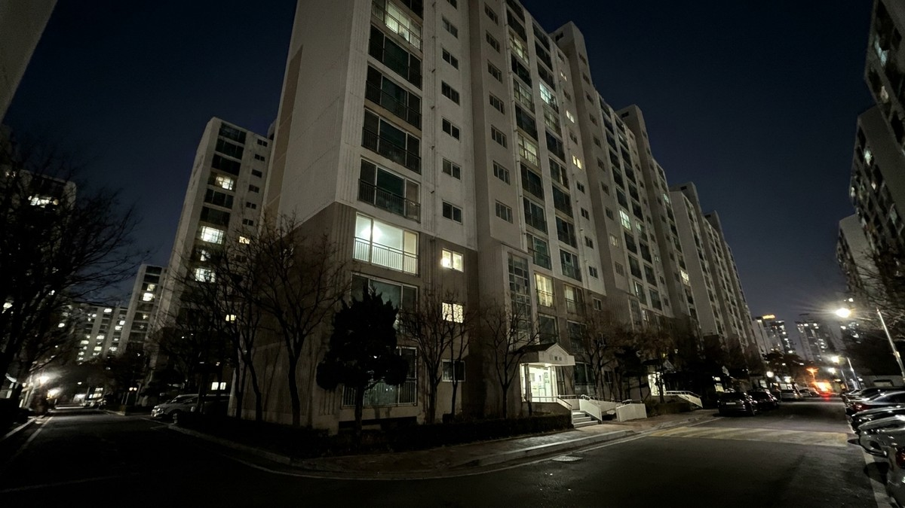
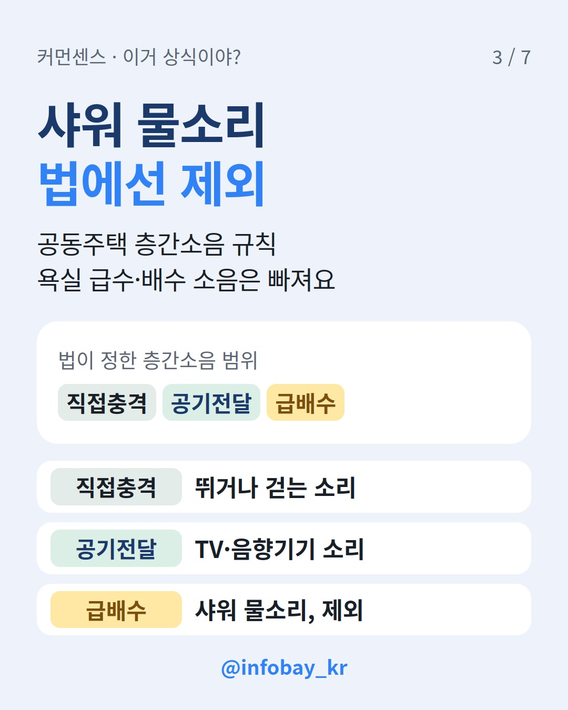
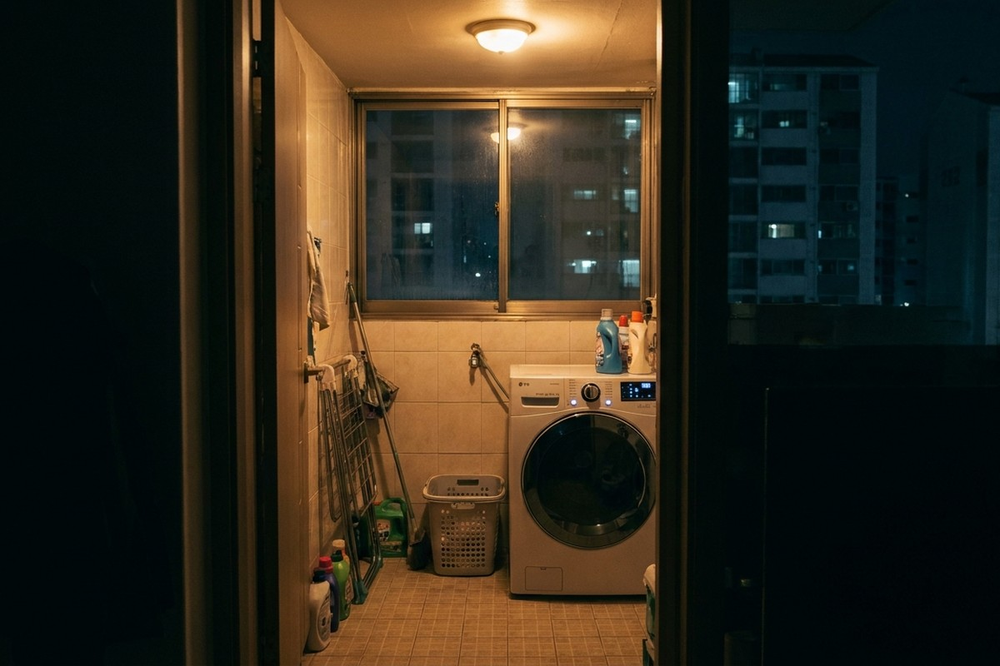

밤 10시 넘어 샤워하면 민폐일까요? 법은 많은 사람 생각과 다르게 답해요.
한 줄 결론: 샤워·세탁기 물소리는 법이 정한 층간소음에서 빠져요. 다만 서울시 관리규약 준칙에는 밤 10시~오전 6시엔 세탁·샤워 소음을 '자제'하라고 적혀 있어요.

11월 6일 스레드에 아파트 공지문 사진 한 장이 올라왔어요. 밤 10시부터 새벽 2~3시까지 세탁기·샤워기·세면대 물소리가 들리니 밤 10시 이후엔 서로 배려하자는 내용이었죠.
반응은 둘로 갈렸어요. '새벽에 퇴근하는 사람은 씻지도 말라는 건가'라는 쪽이 있었고, '공동주택이면 새벽엔 최대한 조용히가 상식'이라는 쪽도 있었어요. 글쓴이로 보이는 누리꾼은 샤워를 하지 말라는 뜻은 아니었다고 해명했어요.
법으로는 층간소음이 아니에요. 「공동주택 층간소음의 범위와 기준에 관한 규칙」은 두 가지 소리만 층간소음으로 쳐요.
욕실·화장실·다용도실에서 물이 들어오고 빠지는 소리(급배수 소음)는 처음부터 빠져 있어요. 물 내려가는 소리는 쓰는 사람 뜻보다 건물을 지을 때 상태에 달린 문제로 보거든요. 이웃사이센터도 같은 이유로 샤워 물소리를 층간소음으로 보지 않는다고 설명했어요.
기계가 돌아가는 소리는 대부분 범위 밖이에요. 층간소음 이웃사이센터는 세탁기·건조기·청소기의 기계소음과 진동을 업무 범위에서 빼요.
예외도 있어요. 기계가 쓰는 도중 바닥에 부딪쳐 나는 소리는 층간소음에 들어가요. 탈수할 때 세탁기가 흔들리면서 바닥을 '쿵쿵' 친다면 판단이 달라질 수 있다는 얘기죠.

그렇지는 않아요. 짚어 볼 게 두 가지 있어요.
'자제' 항목은 지키지 않아도 위반금 같은 벌칙을 매기기 어렵다는 변호사 해석이 있어요. '밤 10시 이후 샤워 금지'처럼 못 박은 규약은 법원에서 효력을 인정받지 못할 수 있다는 의견도 있고요. 규약은 단지마다 따로 정하니까 관리사무소에서 우리 단지 규약부터 확인해 보세요.
직접 올라가기보다 순서대로 밟는 게 안전해요.
공지문을 붙인다면 특정 세대를 콕 집는 표현은 피하세요. 감정이 앞서면 층간소음 갈등이 형사 문제로 번지기도 해요.

소리별로 법과 서울시 준칙 비교
| 소리 | 법정 층간소음 | 서울시 준칙 (밤 10시~오전 6시) |
|---|---|---|
| 뛰기·발소리 | 해당 (직접충격) | 금지 |
| 가구 끌기·망치질 | 해당 (직접충격) | 금지 |
| TV·오디오 | 해당 (공기전달) | 자제 |
| 샤워·세면대 물소리 | 제외 (급배수) | 샤워 소음 자제 |
| 세탁기·청소기 작동음 | 이웃사이센터 범위 밖 | 세탁·청소 자제 |
| 기계가 바닥을 치는 소리 | 포함 | (따로 정한 항목 없음) |
법정 층간소음 dB 기준 (2023년 1월 개정)
| 구분 | 주간 (06~22시) | 야간 (22~06시) |
|---|---|---|
| 직접충격 1분 평균 | 39dB | 34dB |
| 직접충격 최고 소음 | 57dB | 52dB |
| 공기전달 5분 평균 | 45dB | 40dB |
최고 소음은 1시간에 3회 이상 넘으면 기준을 넘은 것으로 봐요.
늦게 들어온 날 체크리스트 (서울시 안내 기준)
Q. 회식하고 자정 넘어 샤워하면 신고당하나요?
샤워 물소리는 법정 층간소음 범위 밖이에요. 그래도 매일 새벽마다 되풀이되면 관리규약 '자제' 대상이 되고 이웃과 부딪칠 수 있어요. 연말 회식 자체가 고민이라면 송년회 빠져도 될까? 회식 반복 권유는 괴롭힘 아니라는 노동부 사례도 함께 보세요.
Q. 오래된 아파트는 기준이 다른가요?
2005년 6월 30일 이전에 사업승인을 받은 공동주택은 직접충격 소음 기준에 5dB을 더해요.
Q. 기준 dB만 넘으면 손해배상을 받을 수 있나요?
법원은 dB 기준을 참고로만 써요. 시간대, 얼마나 자주 났는지, 소음을 줄이려고 노력했는지까지 함께 봐요. 실제 분쟁은 변호사나 분쟁조정위원회와 상담하세요.
이 상황, 당신은? 커먼센스 앱에서 '밤 10시 이후엔 세탁기를 돌리지 않는다' 카드에 인정/아닌데로 투표해 보세요.
*2026년 11월 10일 기준, 법제처 찾기쉬운 생활법령·서울시 공동주택 통합정보마당 확인*